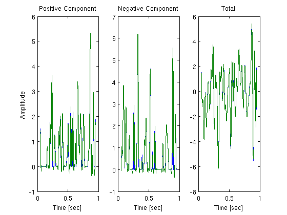

Time Encoding of Stimulus Velocity with a Pair of LIF Neurons
Performs the example presented in section 3.3.2 in [1]. The velocity signal is represented by a bandlimited function. The signal is decomposed into its positive and negative parts u_+, u_- Each of the two parts is encoded by a LIF with random theshold and then recovered in the Sobolev space S1.
[1] Aurel A. Lazar and Eftychios A. Pnevmatikakis, Reconstruction of Sensory Stimuli Encoded with Integrate-and-Fire Neurons with Random Thresholds, EURASIP Journal on Advances in Signal Processing, Volume 2009, 2009, Special Issue on Statistical Signal Processing in Neuroscience, doi:10.1155/2009/682930
Contents
Generate a Test Signal
Generate a signal 1 second long sampled at 0.25 MHz with a bandwidth of 30 Hz, and decompose into positive and negtive components
dt = 4e-6; fmax = 30; t = dt:dt:1; tr_vc = round(0.05*length(t))+1:round(0.95*length(t)); % truncated vector mc = floor(floor(1/dt)*fmax*dt); % maximum sinusoidal components u = gen_test_signal(t(end)+(2*round(0.1*length(t))+1)*dt,dt,fmax,-Inf,mc); u = u((round(0.1*length(t))+1):end-round(0.1*length(t))); % truncate first 100 values to eliminate discontinuities u_pos = max(u,0); u_neg = max(-u,0);
Time Encoding
Set parameters for neurons
b = 2.5;
delta = 2.5;
C = 0.01;
R = 40;
tnr = inf; % threshold to noise ratio
n = delta/tnr;
snr_in = 10*log10(tnr);
Encode both positive and negtive components by LIF
tk_p = iaf_encode(u_pos, dt, b, delta, n, R, C); tk_n = iaf_encode(u_neg, dt, b, delta, n, R, C);
Recover with bandlimited assumptions
Decode positive and negtive components, and combine
u_rp_bl = iaf_decode(diff([0,tk_p]),1,dt,2*pi*fmax,b,delta,R,C); u_rn_bl = iaf_decode(diff([0,tk_n]),1,dt,2*pi*fmax,b,delta,R,C); u_r_bl = u_rp_bl - u_rn_bl; snr_bl_p = 10*log10(sum(u_pos(tr_vc).^2)/sum((u_pos(tr_vc)-u_rp_bl(tr_vc)).^2)); snr_bl_n = 10*log10(sum(u_neg(tr_vc).^2)/sum((u_neg(tr_vc)-u_rn_bl(tr_vc)).^2)); snr_bl = 10*log10(sum(u(tr_vc).^2)/sum((u(tr_vc)-u_r_bl(tr_vc)).^2)); fprintf('SNR of positive component: %.2f dB\n', snr_bl_p) fprintf('SNR of negtive component: %.2f dB\n', snr_bl_n) fprintf('SNR of the recovery: %.2f dB\n', snr_bl)
SNR of positive component: -91.02 dB SNR of negtive component: -87.60 dB SNR of the recovery: -72.40 dB
Decode in S1 using smoothing splines
Decode positive and negtive components, and combine
lamda = 0; u_rp_s1 = LIF_decode_S1(tk_p, t(end), dt, b, delta, R, C, lamda); u_rn_s1 = LIF_decode_S1(tk_n, t(end), dt, b, delta, R, C, lamda); u_r_s1 = u_rp_s1 - u_rn_s1; snr_s1_p = 10*log10(sum(u_pos(tr_vc).^2)/sum((u_pos(tr_vc)-u_rp_s1(tr_vc)).^2)); snr_s1_n = 10*log10(sum(u_neg(tr_vc).^2)/sum((u_neg(tr_vc)-u_rn_s1(tr_vc)).^2)); snr_s1 = 10*log10(sum(u(tr_vc).^2)/sum((u(tr_vc)-u_r_s1(tr_vc)).^2)); fprintf('SNR of positive component: %.2f dB\n', snr_s1_p) fprintf('SNR of negtive component: %.2f dB\n', snr_s1_n) fprintf('SNR of the recovery: %.2f dB\n', snr_s1)
SNR of positive component: 21.87 dB SNR of negtive component: 23.26 dB SNR of the recovery: 27.32 dB
Plot the recovery in S1
figure;
subplot(1,3,1); plot(t(tr_vc),u_pos(tr_vc),t(tr_vc),u_rp_s1(tr_vc));
xlabel('Time [sec]'); ylabel('Amplitude'); title('Positive Component');
subplot(1,3,2); plot(t(tr_vc),u_neg(tr_vc),t(tr_vc),u_rn_s1(tr_vc));
xlabel('Time [sec]'); title('Negative Component');
subplot(1,3,3); plot(t(tr_vc),u(tr_vc),t(tr_vc),u_r_s1(tr_vc));
xlabel('Time [sec]'); title('Total');
 Author: Eftychios A. Pnevmatikakis
Copyright 2009-2011 Eftychios A. Pnevmatikakis